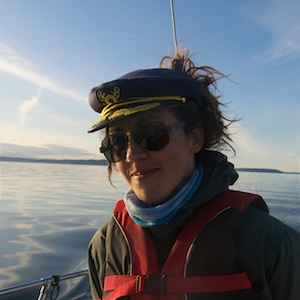
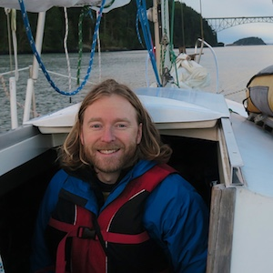

About
The Plan
The vison for this trip has changes quite a bit over the last couple of months but at this point we are planing on saling around the Salish sea for a while,
spend some time in various islands of the San Juan Islands (U.S), the Gulf Islands (Canada), Vancouver BC and hopefully the Skidies (BC).
The route is still very open, actually we haven't figured out much of it yet. We are hoping to sleep mostly at anchor, with some exceptions for cold night,
storms, need to recharge the batteries (which we will find out how long they last) or too many days of rain in a row (requiring an electric heater to dry off our clothes).
As Jon will still be working on his current software project, we will be exploring libraries a lot and hunting for cafes, wifi and power.
Equiped with a 5 gallons water tank, no heater and about 33L (8.75 Gallons) of fuel, we are ready for the challenge! If winds go as planned, we are
leaving Sunday April 30th early in the morning and comming back sometime in July. This is going to be by far our longest trip onbord of Strangewaves!.
Stepho

That's me. I am the captain and blogger and the one mostly keeping this blog up to date. I will try my best to put updates about where we are
and what we are up to every week (depeding on internet connection, power and motivation). My experience with sailing is still relativly recent, but to draw the big picture
I had the chance to crew a few times between 2014 and 2015 for small day-sails on friend's boats.
That same winter, after a long bicycle trip from PT to San Diego, Jon and I got
to live on a motor boat and had the opportunity to learn more about sailing during that same period, and the idea grew from there...
I moved to Victoria in the beginning of 2015, started reading more about sailing... and look for a boat to buy.
This is how I found Strangewaves <3
JonO

Jon, as I am sure you already know (not many people will read this blog is my guess) grew up sailing with his dad on the EastCoas and has had an interest in sailing since a long time.
He had the change to crew with a good friend of ours from Port Tonsend to Pettersberg, AK,
a couple of years ago (check out his pictures).
With his great skill at convincing his friends to get boats (so he gets to crew and not maintain the thing) he was definitly a significant part of the beginning
of my quest to find a sailboat. This said, I am glad he did and sailing with such a goofball is quite a wonderful thing.